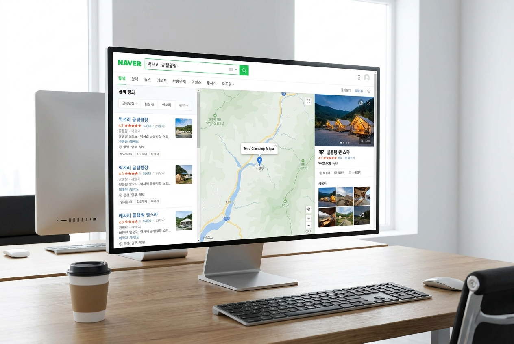
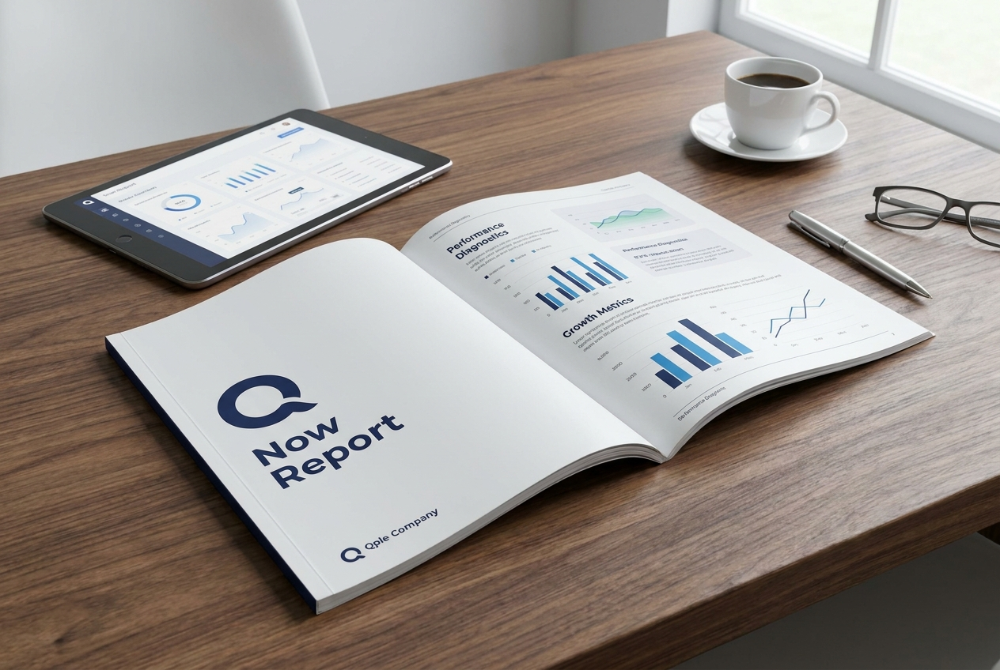

매출이 흔들리는 이유는
시설이 아니라 구조일 수 있습니다.
진단은 전체를 보고, 적용은 필요한 범위만큼 함께합니다.
큐플은 광고만 보거나 상품만 보지 않습니다.
현재 숙소가 어디에서 멈추고 있는지 먼저 확인한 뒤,
필요한 범위만 단계적으로 제안합니다.
예약이 줄었거나, 광고·가격·채널 중 무엇을 먼저 봐야 할지 모르겠다면 숙소 상황을 간단히 남겨주세요. 입력하신 내용을 기준으로 큐플이 먼저 확인할 방향을 안내드립니다. 정식 진단 리포트가 필요한 경우 유료 Now Report 진행 범위를 안내드립니다.
입력하신 지역, 숙소 유형, 판매 방식, 현재 고민을 기준으로 큐플이 먼저 확인할 방향을 검토합니다.
정식 진단 리포트가 필요한 경우 유료 Now Report 진행 범위를 안내드립니다.
빠른 문의는 현재 상황을 확인하기 위한 상담 접수입니다.
정식 진단 리포트는 유료 Now Report로 진행됩니다.

고객은 네이버, OTA, 홈페이지, 리뷰를 비교한 뒤 예약을 결정합니다.
큐플은 각 채널이 같은 방향으로 움직이는지 먼저 확인합니다.
예약 전 정보와 실제 현장 경험이 다르면 리뷰와 재방문 흐름은 흔들릴 수 있습니다.
큐플은 현장 운영 기준도 함께 봅니다.

점검 이후에는 현재 상태와 개선 우선순위를 리포트로 정리합니다.
무엇을 먼저 바꿔야 하는지 확인할 수 있습니다.
예약이 줄었다고 해서 항상 광고를 더 해야 하는 것은 아닙니다.
상품이 선명하지 않거나, 가격 기준이 흔들리거나, 판매채널이 분산되어 있거나, 상세페이지와 응대 흐름이 따로 움직이거나, 현장 운영 기준이 정리되어 있지 않다면 노출이 늘어도 예약 전환은 약할 수 있습니다.
큐플컴퍼니는 광고보다 먼저, 예약이 끊기는 구조를 확인합니다.
예약이 약한 이유는 노출 부족이 아니라 선택 이유 전달 부족일 수 있습니다.
가격을 낮춰도 예약이 늘지 않는 이유는 가격 자체가 아니라 가격 해석 구조 부족일 수 있습니다.
채널이 많아도 전환이 약한 이유는 채널 수가 아니라 채널 간 정보 밀도 차이일 수 있습니다.
큐플은 이 차이를 먼저 확인합니다.
큐플은 무엇을 더 노출할지보다, 무엇이 어떻게 정리되어야 스스로 작동하는지부터 봅니다.
고객이 왜 이 숙소를 선택해야 하는지 상품이 선명하게 정리되어 있는지 확인합니다.
가격이 단순히 높고 낮은 문제가 아니라, 고객이 납득할 수 있는 구조인지 확인합니다.
네이버, OTA, 홈페이지, 상담 채널이 서로 다른 방향으로 움직이고 있지 않은지 봅니다.
유입이 문의와 예약으로 이어지는 과정에서 어디서 멈추는지 확인합니다.
입실, 안내, 응대, 바비큐, 퇴실 등 현장 기준이 정리되어 있는지 봅니다.
고객이 머무는 동안 느끼는 경험이 리뷰와 재방문으로 이어지는지 확인합니다.
큐플컴퍼니의 진행은 상품 판매부터 시작하지 않습니다.
문의로 현재 상황을 확인하고,
정식 진단이 필요한 경우에만 유료 Now Report를 안내합니다.
Now Report 이후 직접 개선이 가능하면 리포트에서 종결됩니다.
함께 개선이 필요한 경우에만
상품·콘텐츠·현장 구조 개선, 채널 운영·예약 응대 대행, 현장 운영 대행 중
필요한 개입 범위를 제안드립니다.
Now Report 이후 직접 개선만으로 충분한 경우에는 추가 상품을 권하지 않습니다.
다만 지속적인 구조 개선이나 운영 개입이 필요하다고 판단되는 경우,
숙소 상태와 개입 정도에 따라 Basic, Advanced, Pro 파트너십으로 나누어 제안드립니다.
차이는 큐플컴퍼니가 어디까지 함께 개입하느냐입니다.
구조의 방향은 사람이 판단합니다.
어떤 고객을 받을지, 무엇을 주력 상품으로 정리할지, 현장 동선을 어떻게 단순화할지, 운영 기준을 어디까지 정리할지는 현장 경험과 판단이 필요합니다.
다만 플레이스 문장, 리뷰 키워드, 경쟁업체 노출 문구, 지역 키워드, 고객 질문 패턴은 데이터와 AI를 활용해 보정합니다.
즉, 방향은 사람이 정하고, 세부 개선은 데이터로 보완합니다.
큐플은 숙소마다 같은 방식으로 접근하지 않습니다.
현장의 상품 구조, 가격 기준, 채널 흐름, 고객 경험, 운영 기준을 함께 보고
현재 숙소에 필요한 정리 범위를 판단합니다.
큐플컴퍼니는 노출 합의가 완료된 레퍼런스만 공식 홈페이지에 공개합니다.
이외에도 다양한 숙박·글램핑 현장 레퍼런스가 있으며,
필요시 상세 사례는 상담 단계에서 공개 가능한 범위 내에서 안내드립니다.
현장명, 사진, 성과 수치는 공개 동의와 근거 자료가 확인된 경우에만 사용합니다.
각 레퍼런스는 큐플컴퍼니가 실제 관여한 범위에 맞춰 소개합니다.
좋은 리뷰는 우연히 만들어지지 않습니다.
상품이 명확하고, 예약 흐름이 자연스럽고, 현장 안내와 응대 기준이 정리되어 있을 때
고객 경험은 리뷰와 재방문 흐름으로 이어질 수 있습니다.
큐플은 리뷰를 단순 후기처럼 보지 않고, 운영 구조가 고객에게 어떻게 전달되었는지 확인하는 자료로 봅니다.
구조를 정리하면, 리뷰의 단어가 달라집니다.
내 숙소가 지금 어디서 흐름이 끊기는지 먼저 확인하세요.
먼저 현재 상태를 확인하고, 필요한 범위만 안내드립니다.